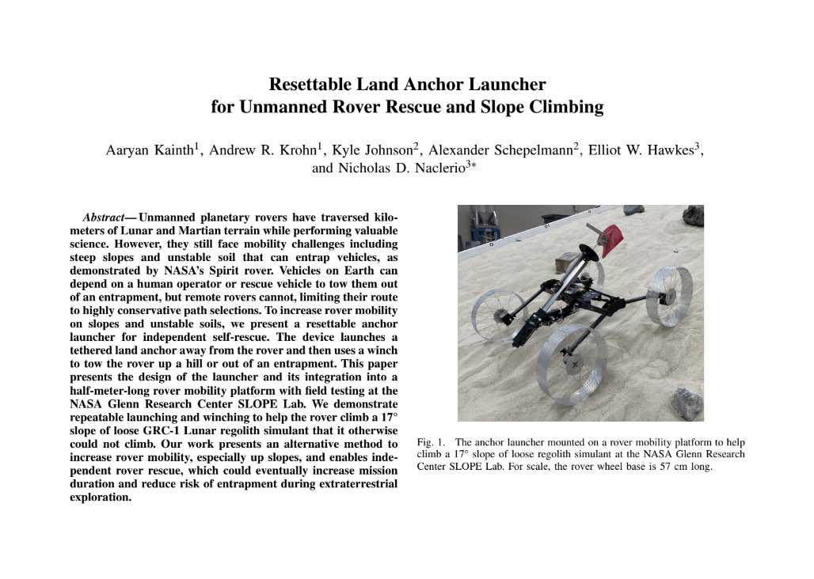

Anchor Launcher
This was the first project I contributed to in the Hawkes Lab. I took the lead when my mentor finished his postdoc, and first authored our paper, which I presented at ICRA 2025!
Key Contributions:
- I designed the clutch, which was heavily inspired by a jumping robot clutch previously designed in the Hawkes Lab.
- I performed many design and testing iterations of the head of the anchor itself, practicing SolidWorks, FDM 3D printing, and basic fabrication.
- I acted as a liason between my mentor and my project mates to ensure that the project was on track to complete and submit by the deadline.